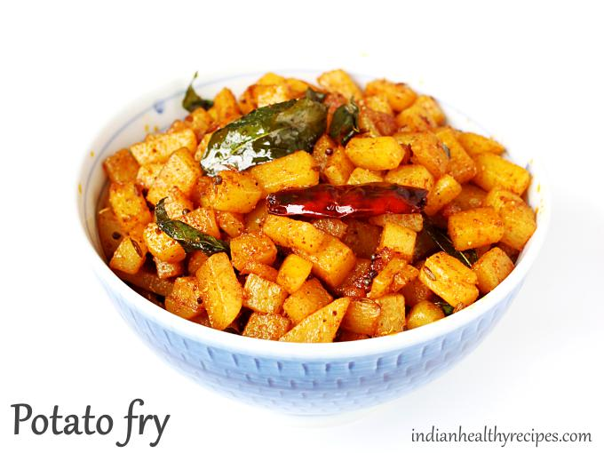

Fried Potato

Description
This fried potato recipe is easy to made,
very quick, and also delicious. 15
minutes after this you will
see beautiful well-plated fried potato on
your table
Ingredients
- 2 nos Medium-sized Potato
- 4 tbsp Corn Flour
- 1/2 tsp Garam Masala / Chat Masala
- 3 tbsp Lemon Juice Extract
- 1 nos Onion (cut into very small pieces)
- 3 nos Green Chili
- 1/2 tbsp Salt
- 1 spring Curry Leaves
Steps
- Prepare a solution of cornflour
with a pinch of salt and water.
- The consistency should be
semithick so that it will coat
the potato pieces uniformly.
- Pressure cook the potatoes
for up to 3 whistles.
- Once pressure it released,
peel of the potatoes and cut
them into small identical sized
cubes.
- Coat them evenly with the corn
flour solution.
- Heat oil in a pan and deep fry
the potatoes for 3-4 minutes
until the color changes to
golden brown.
- In another pan, heat 2 tbsp
of oil. Add the onion pieces,
green chillies, curry
leaves and saute it until
the onion turns yellow color.
- Add the fried potato pieces,
add red chilly powder,
garam masala, salt, lemon extract
one after another and saute
total for a 2-3 minutes.
- Turn off the flame and transfer
to a serving bowl.
- Serve with hot ketchup.